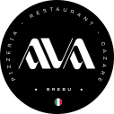
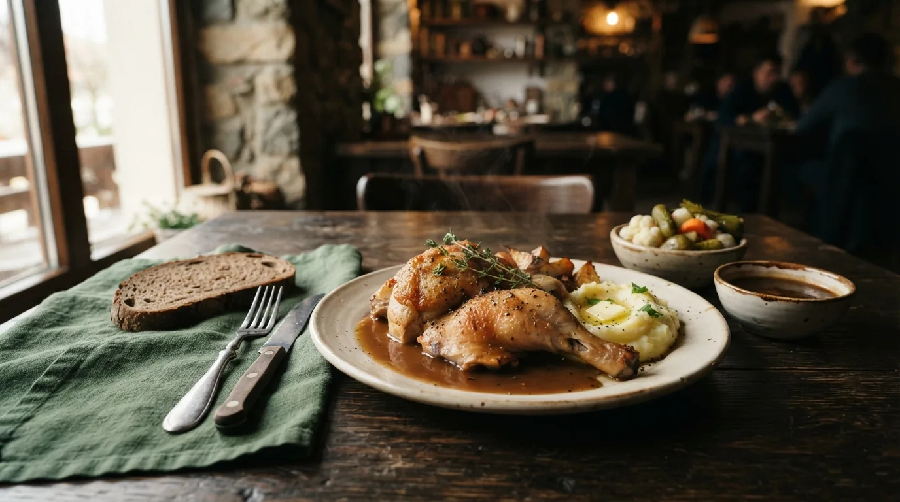
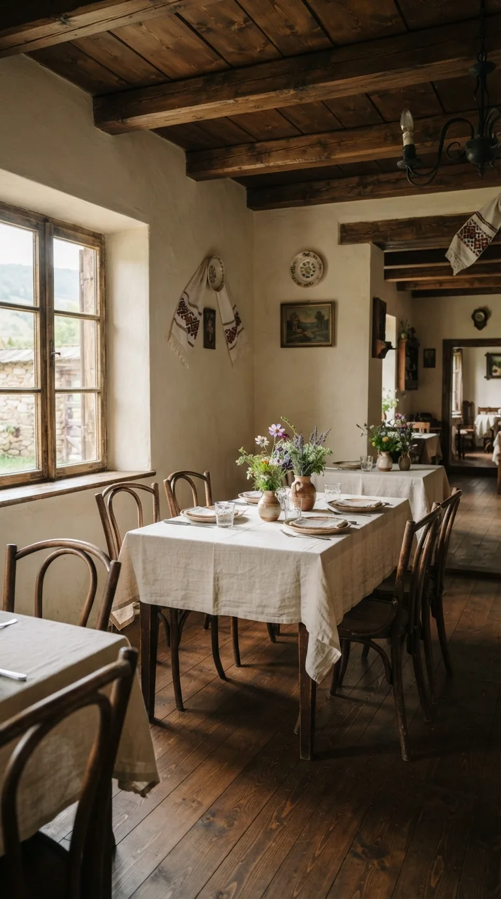

Varianta 01
35 lei
- Felul întâi
- Supă de pui cu tăiței de casă
- Felul principal
- Șnițel de pui
- Alături
- Piure de cartofi · Salată de varză
Pâine de casă inclusă

Rețete de familie, bucate făcute cu grijă și loc pentru toți ai tăi. La noi, o masă bună se întinde mereu la povești.

Meniul zilei / O pauză cum se cuvine
Luni – Vineri / 12:00 – 16:00
35 lei
Pâine de casă inclusă
38 lei
Pâine de casă inclusă
32 lei
Pâine de casă inclusă

Lasă graba la ușă.
Un prânz între prieteni sau o duminică în familie. La Ava, ne plac mesele care adună oamenii și poveștile care mai cer încă o cafea. Așază-te. Ești de-al casei.
Ocazii mici. Mese frumoase.
Pentru un prânz tihnit sau o întâlnire în familie, îți păstrăm un loc.